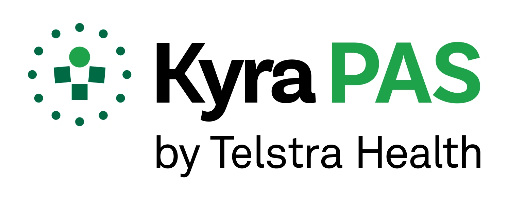
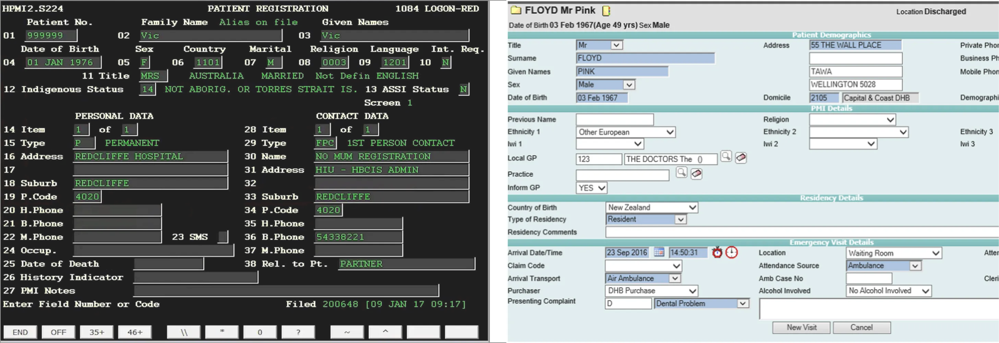
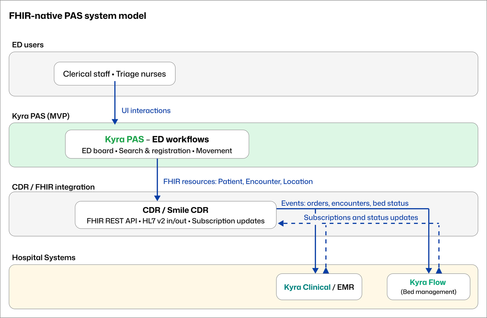
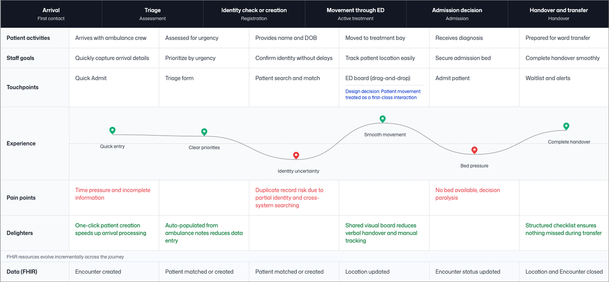
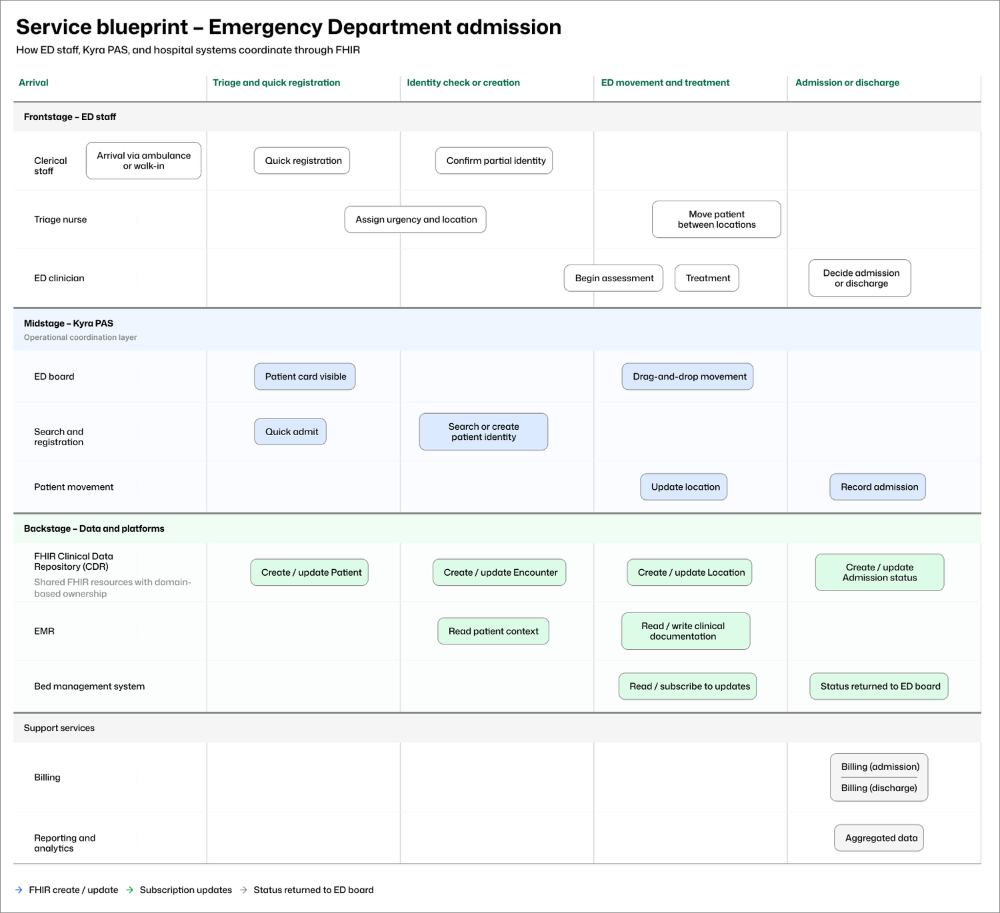
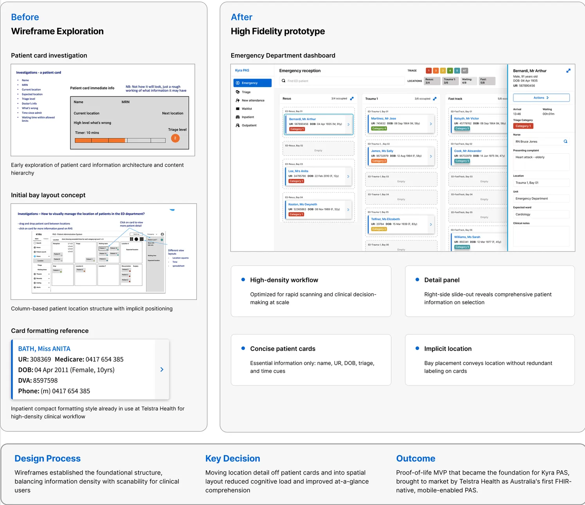
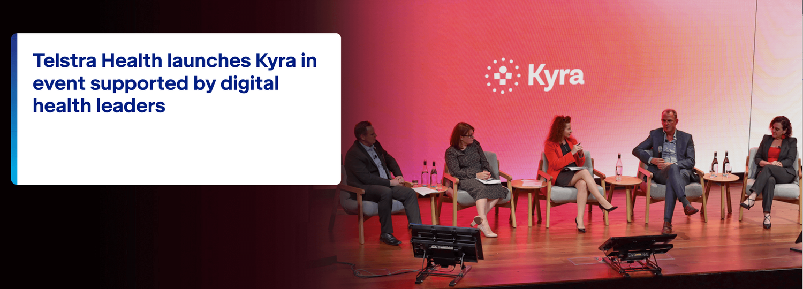
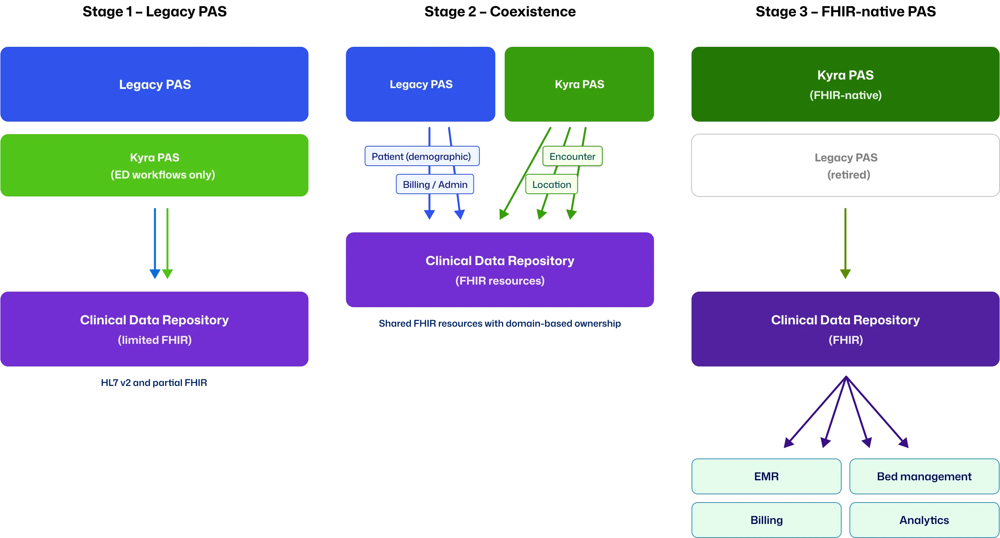

I was the sole designer on a six-person cross-functional team delivering a proof-of-life Patient Administration System MVP for Telstra Health. Built on FHIR, it demonstrated a modern administrative workflow capable of supporting end-to-end Emergency Department admissions, from arrival through triage, treatment, and discharge, while remaining interoperable with existing hospital systems.
The MVP became the foundation for Kyra PAS, which Telstra Health subsequently brought to market as Australia's first FHIR-native, mobile-enabled Patient Administration System. It launched to more than 400 clinicians, health service leaders, and senior digital health stakeholders, where discussion moved quickly from whether the approach could work to how it could be implemented at scale.
Emergency Departments operate under conditions that violate the assumptions most PAS platforms are built on. Patient identity is often partial or uncertain at arrival. Work is interrupted and handed over constantly. Patients move rapidly across locations. Time pressure and cognitive load are sustained throughout a shift.
Legacy PAS platforms assume the opposite: complete data capture upfront, linear task completion, and single-system ownership of patient information. These assumptions simply do not hold in ED.
During research sessions with former ED nurses within Telstra Health, the picture that emerged was consistent. One clinical SME described the legacy interface plainly: "I know it's a black screen with green writing, but we call it the green screen. I think anything I do will be better." That was not a throwaway comment. It described a generation of clinical staff who had learned to work around their tools rather than with them.
In practice, administrative interaction in ED is deferred until workload allows. Staff rely on memory, paper, or duplicate entry to keep patient flow moving, correcting records later when pressure eases. This behaviour is not accidental. It is a rational response to systems that slow care when used as designed.

Hospitals also operate multiple systems capturing overlapping patient information: PAS, EMR, bed management, and departmental tools. When identity or encounter data cannot be safely amended in real time, duplication becomes the default. Records are created and reconciled later, which increases error risk, rework, and loss of confidence in the system of record.
PAS breakdown in ED is therefore not a UI problem. It is a system integrity problem.
PAS sits at the centre of hospital operations, underpinning funding, billing, compliance, and hundreds of integrations. Most platforms are decades old, heavily customised, and risky to change incrementally. Innovation stalled, and workarounds became normalised across the sector.
A FHIR-native model supports a distributed approach to patient data. Rather than enforcing early completeness or single-system ownership, it allows information to be added, corrected, and shared incrementally across systems while preserving auditability.
For PAS, this meant supporting uncertainty, refining identity over time, and operating alongside legacy platforms rather than attempting wholesale replacement.

A FHIR-native PAS shifts from record ownership to participation in a shared clinical data ecosystem.
This was delivery-driven work with a fixed six-month deadline. The objective was a working PAS MVP that demonstrated a modern, interoperable administrative model under Emergency Department conditions.
My role was to translate clinical and operational complexity into a coherent interaction model. The scrum master held the team coordination process, which freed me to stay close to the clinical and engineering detail. I ran regular design walkthroughs with the team, giving developers early visibility of what was coming in the pipeline and space to surface technical constraints before work moved into build. Design, validation, and build happened in parallel throughout.
The product owner scoped the MVP to a single high-risk journey: ED arrival and triage, identity check or creation, patient movement across ED locations, admission completion, and transfer or discharge. My job was to make that journey work as a coherent, clinically safe interaction model within six months.

Emergency admission involves more than the ED. Frontstage clinical and clerical work, midstage PAS coordination, and backstage updates across EMR, bed management, billing, and reporting systems all have to move together without blocking patient flow. The service blueprint below maps where uncertainty enters the workflow, which system owns which decisions, and how downstream systems stay informed.

There was no production system and no external testing budget. Validation relied on weekly design reviews with the engineering team, structured walkthroughs with clinical SMEs and PAS specialists, architectural alignment sessions, and regular internal critique. These sessions produced concrete changes.
During one design walkthrough, I presented wireframes for the duplicate record detection flow. The scenario of a staff member disregarding a potential match on name and date of birth, then entering a Medicare number that produces an exact match, came up in discussion. Should the system flag it again? The group agreed on a clear direction: flag once, then respect the disregard. I updated the wording and interaction accordingly. If staff choose to proceed past the first flag, the system allows a new record to be created and handles reconciliation later through merge functionality.
A constraint with direct patient safety implications surfaced during the project: in a clinical system, you never delete a patient record. You archive it. Deleted records leave no audit trail and no recovery path. I redesigned the patient edit and record management flows to reflect this, replacing a delete action with an archive interaction that keeps previous data visible and recoverable within each field section.
The word "triage" carries two distinct meanings in a hospital context: ED urgency categorisation and waitlist prioritisation. Using it inconsistently across the interface would create genuine clinical confusion. I mapped terminology decisions carefully at each stage rather than resolving them by convention.
The most significant departure from legacy PAS was my decision to treat patient movement as a primary interaction surface rather than an admin task buried in a form. In legacy systems, moving a patient between locations typically means navigating to a record, opening an edit screen, updating a field, and saving. By the time that transaction is complete, the clinical situation may have changed. Across the legacy interfaces I reviewed during research, patients were represented as rows in a table or lines in a queue. There was no sense of a person, no spatial awareness of the ED, and no way to understand the department at a glance.
I proposed a visual movement board where staff drag patient cards between location columns. Early in the project, a clinical expert I was working with described a geospatial ED view from a previous organisation that worked exactly this way. That validation landed early and held throughout the project. The movement board became the primary surface of the product. State updates automatically when a card moves. Status and timing remain visible at all times. Detailed actions are accessible without leaving the board view.
Treat patient movement as a first-class interaction to support situational awareness, not as an administrative status update.
The patient card is the atomic unit of the entire interaction model. Getting it wrong would have cascaded through every other surface.
My initial wireframe listed nine data points I assumed the card needed to carry: name, MRN, current location, expected location, triage level, doctor's info, what was wrong, time since admission, and waiting time against triage limits. The reasoning felt sound at the time.
Clinical walkthroughs cut that down quickly. Most of that information was either contextual (already visible from which column the card sat in on the board), secondary (accessible by clicking through to the detail panel), or a risk if surfaced in abbreviated form on a small component under time pressure. What the card actually needed to carry was name, age, sex, URN, and triage category. Everything else lived in the detail panel, accessible on click without leaving the board.
I had originally included a bay number field on the card itself. During review I realised this was the wrong model. The bay is not a property of the patient; the patient is a property of the bay. An empty bay square waiting to receive a card reinforced the spatial logic of the board and removed a redundant data point from the card.
Rather than introducing a new visual language, I matched the card style and DOB formatting conventions already in use across Telstra Health's hospital-facing products. This reduced the learning curve and reinforced that Kyra PAS belonged to the same platform family.
The ED board itself was designed as a column-per-location layout where each column represented a physical space in the department: waiting area, triage, resus, trauma bays, fast track. Staff moved patients by dragging cards between columns. State updated automatically. The detail panel slid out on the right when a card was selected, keeping the full board visible while staff reviewed or updated patient information.

This phase was explicitly framed as a proof-of-life MVP. Success was defined by system viability and coherence rather than adoption metrics or efficiency gains. The work needed to demonstrate a complete ED admission journey end-to-end, handle identity uncertainty without blocking flow, support incremental data correction, and produce an interaction and architecture model that engineering could extend.
The MVP was delivered to a fixed showcase date and presented across the Telstra Health portfolio. More than 400 clinicians, health service leaders, researchers, and senior digital health stakeholders attended.
Discussion moved quickly from whether the approach could work to how it could progress, including integration pathways, staged rollout, and expansion to other admission scenarios. The conversation that had previously centred on legacy constraints shifted to platform ambition.

The MVP became the foundation for Kyra PAS, which Telstra Health brought to market as Australia's first FHIR-native, mobile-enabled Patient Administration System, expanding from the Emergency module I designed to a full platform covering inpatients, theatres, waitlist management, outpatients, maternity, and billing.
The MVP demonstrated not only that the interaction model worked, but that it could be introduced without forcing hospitals to abandon their existing systems overnight. The lead engineer and system architect designed a FHIR-native architecture that allowed Kyra PAS to operate alongside a legacy PAS during a transition period, with FHIR resources progressively taking ownership of data domains as confidence in the new system grew. My interaction model was designed to operate within that architecture from the start, which meant the ED workflows I built were already positioned to extend to other modules as the platform matured.

This work established a viable PAS interaction model, a defensible technical foundation, and a concrete demonstration of PAS operation under genuine ED conditions. It was foundational rather than complete, and I knew that going in.
Six months constrained the depth of scenario coverage and made external clinical validation impossible within the delivery timeline. If I were doing this again, I would push harder earlier for even one round of observation in a live ED environment. The SME sessions were invaluable, but there is no substitute for watching staff manage a real board during a peak period.
What I would keep without question is the decision to treat the movement board as the primary surface from the very beginning. That single framing decision shaped everything else: the card structure, the information hierarchy, the FHIR resource model, and ultimately what made the prototype immediately legible to clinicians who had never seen it before.